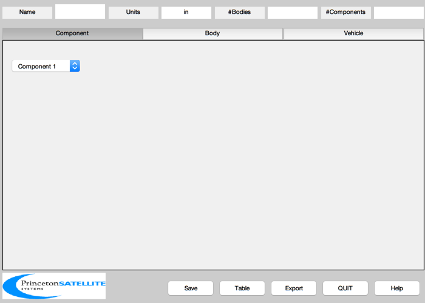
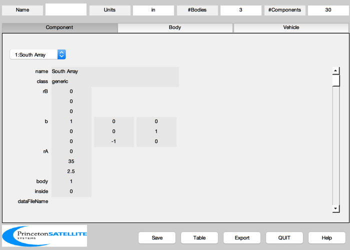
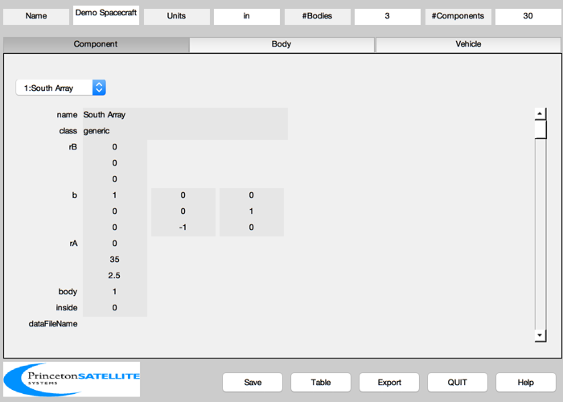
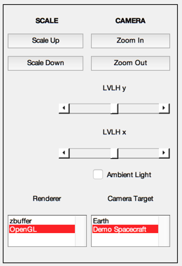
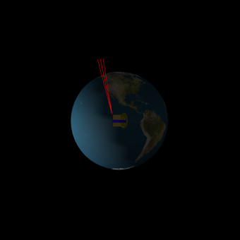

Build up a model of a geosynchronous communications satellite.
This script demonstrates many of the methods of incorporating spacecraft components into a CAD model. After the model is finished, it is displayed with DrawSCPlugIn. The thrusters are cycled just to show you where they are.
To see there the spacecraft is relative to the Earth, zoom out repeatedly once the loop is finished. You can then scale the spacecraft up to see it better. Turn on ambient light to brighten the spacecraft surfaces. ------------------------------------------------------------------------- See also BuildCADModel, CreateComponent, DrawSCPlugIn, ExportCAD, QLVLH, FindDirectory, CosD, Mag, SinD, Date2JD, MoonV1, SunV1 -------------------------------------------------------------------------
Contents
%-------------------------------------------------------------------------- % Copyright (c) 1998 Princeton Satellite Systems, Inc. % All rights reserved. %--------------------------------------------------------------------------
Parameters
% Spacecraft dimensions %----------------------- xW = 66/2; yW = 62/2; zW = 74/2;
Initialize the model
%------------------------ BuildCADModel('initialize'); % Add units %----------- BuildCADModel( 'set units', 'in' );
Create the bodies
% Solar arrays %--------------- m = CreateBody('make','name','South Solar Array',... 'rHinge',[0 35 2.5]','bHinge',[1 0 0;0 0 1;0 -1 0],'previousBody',3); BuildCADModel('add body', m ); m = CreateBody('make','name','North Solar Array',... 'rHinge',[0 -35 2.5]','bHinge',[1 0 0;0 0 1;0 -1 0],'previousBody',3); BuildCADModel('add body', m ); bHinge = struct; bHinge.b = [0 0 1;1 0 0;0 -1 0]; m = CreateBody('make','name','Core','bHinge',bHinge); BuildCADModel('add body', m ); BuildCADModel( 'compute paths' );
Create the components
% The Indostar solar array when it is earth pointing % The long axis should be z. It will be % transformed to y by the hinge transformation matrix. %------------------------------------------------------ y = 76.25; w = 33; theta = 10*pi/180; s = y*sin(theta)/2; c = y*cos(theta); v = [-w -s 0;... 0 -s 0;... -w s c;... 0 s c;... -w -s 2*c;... 0 -s 2*c;... -w s 3*c;... 0 s 3*c;... 0 s 0;... w s 0;... 0 -s c;... w -s c;... 0 s 2*c;... w s 2*c;... 0 -s 3*c;... w -s 3*c]; f = [ 1 2 4 3;... 3 4 6 5;... 5 6 8 7;... 9 10 12 11;... 11 12 14 13;... 13 14 16 15]; v(:,3) = v(:,3) + y/2; m = CreateComponent( 'make', 'generic',... 'name', 'South Array',... 'body', 1,... 'vertex', v,... 'face', f,... 'inside', 0,... 'b', [1 0 0;0 0 1;0 -1 0],... 'rA', [0 35 2.5]',... 'faceColor', 'solar cell' ); BuildCADModel('add component', m ); v(:,3) = -v(:,3); f = fliplr(f); m = CreateComponent( 'make', 'generic',... 'name', 'North Array',... 'body', 2,... 'vertex', v,... 'face', f,... 'inside', 0,... 'b', [1 0 0;0 0 1;0 -1 0],... 'rA', [0 -35 2.5]',... 'faceColor', 'solar cell' ); BuildCADModel('add component', m );
Struts
%--------- y = 76.25/2; w = 11; theta = 10*pi/180; b = 1; s = y*sin(theta)/2; c = y*cos(theta); v = [ b 0 0;... -b 0 0;... w+b -s c;... w-b -s c;... b 0 0;... -b 0 0;... 2*w+b -s c;... 2*w-b -s c]; f = [ 1 2 4 3;... 5 6 8 7]; m = CreateComponent( 'make', 'generic',... 'name', 'South Array Strut 1',... 'body', 1,... 'vertex', v,... 'face', f,... 'b', [1 0 0;0 0 1;0 -1 0],... 'rA', [0 35 2.5]',... 'faceColor', [0.7 0.7 0.7],... 'edgeColor',[1 1 1]); BuildCADModel('add component', m ); v(:,3) = -v(:,3); m = CreateComponent( 'make', 'generic',... 'name', 'North Array Strut 1',... 'body', 2,... 'vertex', v,... 'face', f,... 'b', [1 0 0;0 0 1;0 -1 0],... 'rA', [0 -35 2.5]',... 'faceColor', [0.7 0.7 0.7],... 'edgeColor',[1 1 1]); BuildCADModel('add component', m ); v = [ b 0 0;... -b 0 0;... -w+b s c;... -w-b s c;... b 0 0;... -b 0 0;... -2*w+b s c;... -2*w-b s c]; f = [ 1 2 4 3;... 5 6 8 7]; m = CreateComponent( 'make', 'generic',... 'name', 'South Array Strut 2',... 'body', 1,... 'vertex', v,... 'face', f,... 'b', [1 0 0;0 0 1;0 -1 0],... 'rA', [0 35 2.5]',... 'faceColor', [0.7 0.7 0.7],... 'edgeColor',[1 1 1]); BuildCADModel('add component', m ); v(:,3) = -v(:,3); m = CreateComponent( 'make', 'generic',... 'name', 'North Array Strut 2',... 'body', 2,... 'vertex', v,... 'face', f,... 'b', [1 0 0;0 0 1;0 -1 0],... 'rA', [0 -35 2.5]',... 'faceColor', [0.7 0.7 0.7],... 'edgeColor',[1 1 1]); BuildCADModel('add component', m );
Core components
%------------------ % Panels f = [1 4 3 2]; v = [-xW -yW -zW;... -xW -yW zW;... xW -yW zW;... xW -yW -zW]; m = CreateComponent( 'make', 'generic',... 'name', 'North Equipment Panel',... 'body', 3,... 'vertex', v,... 'face', f,... 'inside', 0,... 'faceColor','mirror'); BuildCADModel('add component', m ); f = [1 2 3 4]; v = [-xW yW -zW;... -xW yW zW;... xW yW zW;... xW yW -zW]; m = CreateComponent( 'make', 'generic',... 'name', 'South Equipment Panel',... 'body', 3,... 'vertex', v,... 'face', f,... 'inside', 0,... 'faceColor','gold foil'); BuildCADModel('add component', m ); f = [1 4 3 2;1 2 3 4]; v = [-xW -yW zW;... -xW yW zW;... xW yW zW;... xW -yW zW]; m = CreateComponent( 'make', 'generic',... 'name', 'Nadir Panel',... 'body', 3,... 'vertex', v,... 'face', f,... 'inside', 0,... 'faceColor','gold foil'); BuildCADModel('add component', m ); % Core info = 2*0.95*[xW yW zW]; m = CreateComponent( 'make', 'box',... 'name', 'Core Box',... 'body', 3,... 'x', info(1),... 'y', info(2),... 'z', info(3),... 'inside', 0,... 'faceColor',[0.7 0.7 0.7],... 'edgeColor',[0.7 0.7 0.7]); BuildCADModel('add component', m ); % Feed tower l = 67 + xW; lB = 40 + xW; wT = 4; wB = 6; wD = 8; yC = 0; xC = -10; f = [1 2 3 4;... 3 4 8 7;... 1 4 8 5;... 1 2 6 5;... 2 3 7 6;... 8 7 11 12;... 5 8 11 9;... 5 6 10 9;... 6 7 11 10]; v = [xC-wT yC+wT l;... xC+wT yC+wT l;... xC+wT yC-wT l;... xC-wT yC-wT l;... xC-wB yC+wB lB;... xC+wB yC+wB lB;... xC+wB yC-wB lB;... xC-wB yC-wB lB;... xC-wD yC+wD xW;... xC+wD yC+wD xW;... xC+wD yC-wD xW;... xC-wD yC-wD xW]; m = CreateComponent( 'make', 'generic',... 'name', 'Feed Tower',... 'body', 3,... 'vertex', v,... 'face', f,... 'faceColor','gold foil'); BuildCADModel('add component', m ); % Fuel tanks m = CreateComponent( 'make', 'fuel tank',... 'name', 'Fuel Tank East',... 'body', 3,... 'radius', 14,... 'rA',[xW;0;0],... 'faceColor',[0.7 0.7 0.7],... 'edgeColor',[1 1 1]); BuildCADModel('add component', m ); m = CreateComponent( 'make', 'fuel tank',... 'name', 'Fuel Tank West',... 'body', 3,... 'radius', 14,... 'rA',[-xW;0;0],... 'faceColor',[0.7 0.7 0.7],... 'edgeColor',[1 1 1]); BuildCADModel('add component', m ); % Reflector m = CreateComponent( 'make', 'ellipsoid',... 'name', 'Elliptical reflector',... 'body', 3,... 'abc', [30 60 10],... 'thetaUpper',pi/4,... 'n',10,... 'rA',[25;0;zW+10],... 'b',[CosD(10) 0 -SinD(10);0 1 0;SinD(10) 0 CosD(10)],... 'inside', 0,... 'faceColor',[0.5 0.5 0],... 'edgeColor',[1 1 1]); BuildCADModel('add component', m ); % Thrusters %---------- rThruster = [ 37.50 37.50 37.50 37.50 -37.50 -37.50 -37.50 -37.50 -27.81 27.81 27.81 -27.81 -39.00 39.00 39.00 -39.00;... -31.32 31.32 31.32 -31.32 -31.32 31.32 31.32 -31.32 -35.48 -35.48 -35.48 -35.48 -35.81 -35.81 -35.81 -35.81;... 10.87 10.87 56.90 56.90 56.90 56.90 10.87 10.87 10.38 10.38 57.39 57.39 29.89 29.89 37.89 37.89]; rThruster(3,:) = rThruster(3,:) - 34.20; uThruster = [ -1 -1 -1 -1 1 1 1 1 0.242 -0.242 -0.242 0.242 0.208 -0.208 -0.208 0.208;... 0 0 0 0 0 0 0 0 0.948 0.948 0.948 0.948 0.978 0.978 0.978 0.978 ;... 0 0 0 0 0 0 0 0 0.208 0.208 -0.208 -0.208 0.000 0.000 0.000 0.000]; uECoefficient.iSP = [120 110]; uECoefficient.pulsewidth = 2; thrustCoefficient = [0.2*ones(1,12) 0.1*ones(1,4)]/350; kThruster = zeros(1,16); for k = 1:16 m = CreateComponent( 'make', 'hydrazine thruster', 'model', 'mr-103c', ... 'name', sprintf('Thruster %i',k), 'body', 3,... 'unitVector', uThruster(:,k), 'rA', rThruster(:,k), ... 'uECoefficient', uECoefficient, 'thrustCoefficient',thrustCoefficient(k),... 'positionVector', rThruster(:,k), 'minimumPulsewidth', 0.02, 'valveHeaterPower', 8,... 'pressureNominal', 350*6895 ); kThruster(k) = BuildCADModel( 'add component', m ); end
Vehicle properties
rECI = [42000;0;0]; v = VOrbit(rECI(1)); vECI = [0;v;0]; BuildCADModel( 'set name' , 'Demo Spacecraft' ); BuildCADModel( 'set rECI' , rECI ); BuildCADModel( 'set vECI' , vECI ); BuildCADModel( 'set qLVLH', QLVLH( rECI, vECI ) ); BuildCADModel( 'set qECIToBody', QLVLH( rECI, vECI ) ); BuildCADModel( 'set omega', [0;-v/Mag(rECI);0] ); g = BuildCADModel( 'get cad model' ); dataDir = FindDirectory('SCData'); ExportCAD( g, fullfile(dataDir,'ComSat.txt') );
Draw the spaceraft in a loop using DrawSCPlugIn
We draw each thruster plume one at a time to confirm their direction.
% Ephemeris %---------- jDToday = Date2JD; % Specify the hinge rotations %---------------------------- g.body(1).bHinge.b = [1 0 0;0 0 1;0 -1 0]; g.body(1).bHinge.angle = 0; g.body(2).bHinge.b = [1 0 0;0 0 1;0 -1 0]; g.body(2).bHinge.angle = 0; g.body(3).bHinge.b = [0 0 1;1 0 0;0 -1 0]; tag = DrawSCPlugIn( 'initialize', g, [], [], 'Earth', jDToday ); for k = 1:16 g.component(kThruster(k)).deviceInfo.displayPlume = true; DrawSCPlugIn( 'update spacecraft', tag, g, jDToday ); pause(0.5) g.component(kThruster(k)).deviceInfo.displayPlume = false; end %-------------------------------------- 